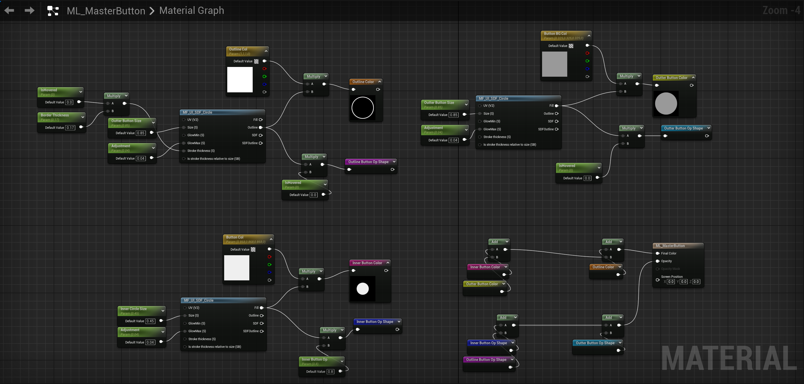

I hope this premier ease your learning curves and inspires you to learn something new.
“Your First Hour in UMG” is the best beginner UMG(Unreal Motion Graphic) tutorial that I found. The tutorial comes with a project already setup, and it provides a good starting point to learn how UI is displayed in Unreal.
Unreal 4 and Unreal 5 has minor differences in UI, but not too many to make what you learn here hard to translate to Unreal 5. This tutorial gives you the confidence to tackle other Unreal UI learnings.
It's okay to rewatch anything you don't understand multiple times. And tutorials all have so many sections. It's okay if you can only commit to doing a small part of a tutorial at a time. This tutorial ended up taking me 4 hours or more to complete it.
https://youtu.be/kTg2Le6QwrQ?si=U38eMddR-uxHcHqE
Once you get a premier in UMG and blueprint, please try out Scott’s fabulous UMG multi-screen dev. I come from a mobile game background and scalability is a must to learn for folks like me. This tutorial focus on widgets only, so it’s very self contained.
Unlike Unity, Unreal has widget elements that can only have one child widget element. I got stuck on how I'm supposed to build a layout with this limitation until I was introduced to Overlay node.
https://www.youtube.com/live/WaHlhkmVDoI?si=g_RSy65kLi3pE3rS
While materials and shaders can be used outside of Unreal, Material Lab makes the process of learning how to integrate materials into UI a lot more accessible.
I personally find Named Reroute node to be very helpful. As designers we are a lot more sensitive to shapes. If we capture shapes in named reroute notes, putting a button togather in materials can be intuitive. (Like the graph below)
 Back to TopFollowing tutorials and learning from example projects has been helping me the most in learning any game engine. Every project comes with different level of complexity and you will see that projects dont' always do things the same way, such as putting a button togather. I'm going to put many helpful Unreal UI learning material links here. Let me know if you would like me to go deeper to explain any of them.
The Cropout project is in Blueprint only. It's a great way to mess around and see what you can change in the project.
https://www.unrealengine.com/en-US/blog/cropout-casual-rts-game-sample-projectAdvanced UI Templating Techniques using Widget Blueprints and Materials
https://youtu.be/dSTdAToJ7Gg?si=6y_r07a2EL5mUGhSLevel Up Your UI Communication with Unreal ViewModels
https://www.youtube.com/watch?v=93NTeqTiXIw&t=1sMastering UI Panels and Pop-ups in Unreal Engine
https://youtu.be/_0aNOo2JVSI?si=6L8PsQpfC5ORttssHope they are helpful!
Back to TopIf you have any inquries, please feel free to email me at donxu29[at]gmail.com.